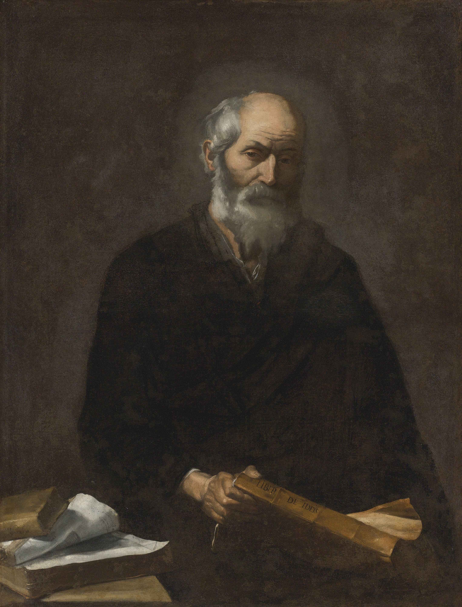

Welcome to the Roots of Wisdom
Explore the early lives and origins of the world’s greatest philosophers. From humble beginnings to timeless ideas, discover how their childhoods and environments helped shape the way we think today.
Featured Philosopher
Born in Athens, 470 BC. Known for his Socratic method and influence on Western thought.
Socrates
Born in Florence, 1469. Known for The Prince and his realistic view of power, earning him the title father of political science.
Niccolo

Born in Athens, 427 BC. Known for founding the Academy and shaping Western thought through his dialogues and teachings on ideal forms and justice.
Plato